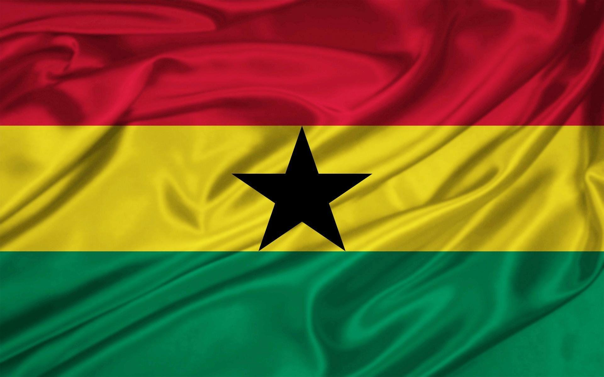
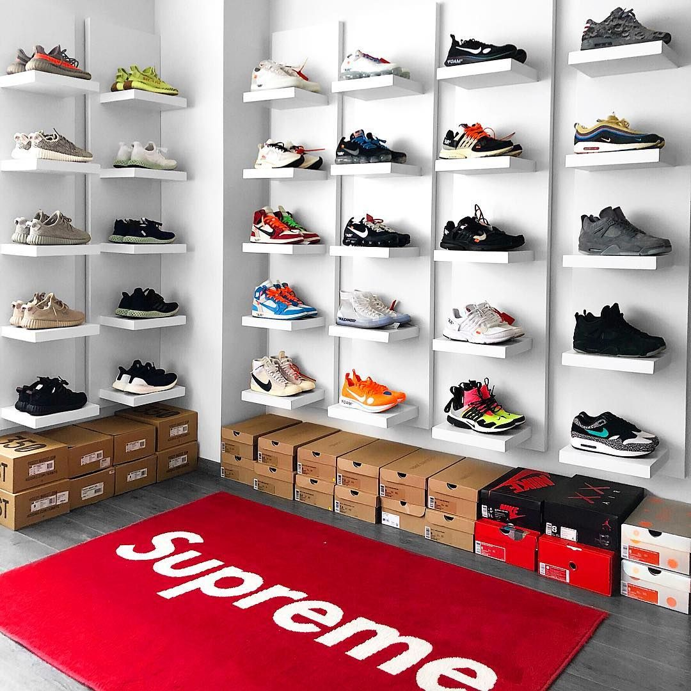

Culture
Food
I love that I grew up with both Ghanaian and Trinidadian cultures. It gave me a unique perspective and appreciation for different traditions, customs, and of course, the food. One thing I can say for sure is that the food was always delicious and authentic. I have many fond memories of my mom and pops cooking up a storm in the kitchen and the amazing aromas that filled our home.
Some famous Ghanaian foods that I love include Jollof rice, which is a flavorful and spicy rice dish cooked with tomatoes, onions, and a blend of spices. Another popular Ghanaian dish is Waakye, which is made with rice and beans and often served with a variety of sides like fried plantains and stewed meats. I also can't forget about Banku, a starchy, dough-like dish made from fermented corn and cassava dough, usually served with soup, sauce or stew.
On the Trinidadian side, there's always a good Roti, a wrap-like dish that's made with flour and filled with a variety of fillings like curry chicken, potatoes, and chickpeas. Another famous Trinidadian dish is Doubles, which is made up of two pieces of flatbread filled with spicy chana (chickpeas), tamarind sauce, and hot pepper sauce. And of course, I can't forget about Pelau, a flavorful rice dish cooked with chicken, pigeon peas, coconut milk, and a blend of spices.
Want to learn how to make the food?
Sneaker Culture

Shoe game, also known as sneaker culture, has become an integral part of modern-day fashion and pop culture. Sneakers are no longer just a functional item of clothing, but have become a symbol of personal style and status. The importance of shoe game can be seen in the way that people collect and display their sneaker collections, sometimes spending thousands of dollars on rare or limited edition pairs
Shoes I Love:
- Kobe Grinches
- Air Jordan 4 PSG
- jordan 1 OG Obsidian
- Nike Kyrie 3 “Bruce Lee”
- kyrie irving sandy low 2
- Nike Air Mag Back to the Future Shoes